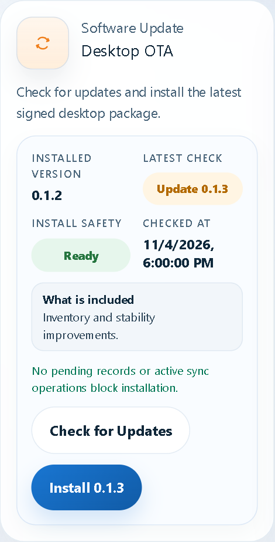
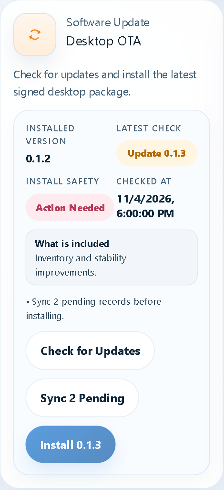

How to check for, prepare, and install a VPOS Desktop update safely.
In VPOS Desktop, select Settings. Find the Software Update card named Desktop OTA.
Select Check for Updates. Wait for the latest-version result and release notes.
Confirm Install Safety says Ready. If it says Action Needed, synchronize the pending records first.
Select Install [version]. Allow the download, verification, installation, and restart to finish.


Open Settings > Desktop OTA and confirm Installed Version shows the new version.
Check the branch, location, cashier identity, printer, and receipt settings.
Select Sync Now and wait for the workstation to show that it is fully synchronized.
Perform a test print. On a pilot workstation, complete a small test transaction according to store procedure.
| What you see | What to do |
|---|---|
| Check failed | Check the internet connection, then select Check for Updates again. If it still fails, contact the supervisor or system administrator. |
| Action Needed | Select Sync [number] Pending. Finish any active transaction and wait for synchronization to complete. |
| Shift Open | Close the cashier shift before updating when possible. If VPOS asks for confirmation, follow the supervisor's instruction. |
| Installation failed | Do not repeatedly force-close VPOS or delete local files. Record the message, keep the workstation powered on, and contact support. |
| VPOS does not reopen | Wait one minute, then open VPOS Desktop once. If it still does not start, contact support and report the old and new version numbers. |